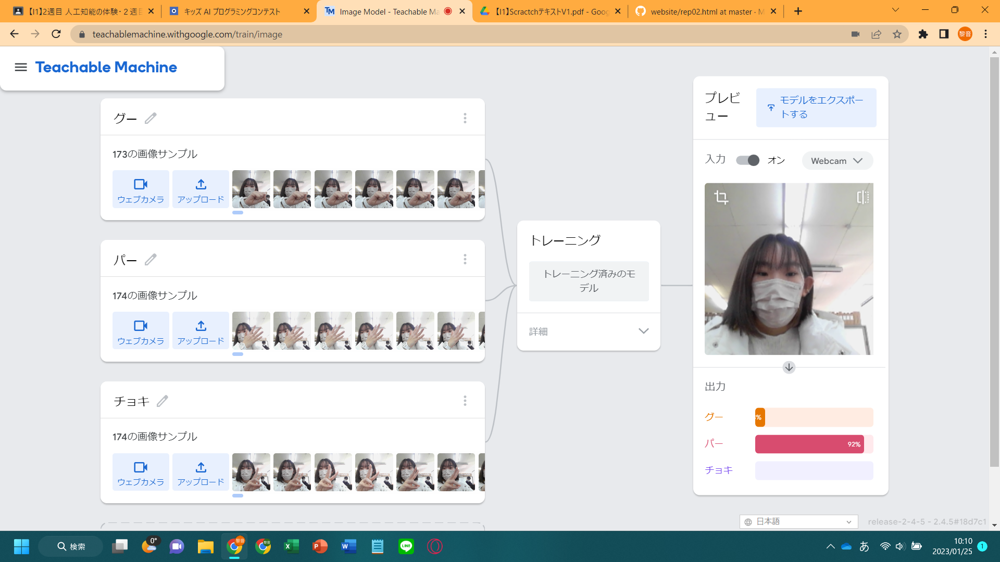

第2週目
2-1 １週目のレポートをHTMLで作る
１週目のレポート
1.内容
ないようないよう
2.感想
かんそうかんそう
2-2 機械学習体験

1.内容
Teachable Machineを使って、グー・チョキ・パーを判別できるAIをつくった。
まず、学習させるためにグー・チョキ・パーそれそれについて、ウェブカメラで写真を撮影した。
データを収集し終えたら、「トレーニング」のボタンを押して学習を開始した。
学習できたら、グー・チョキ・パーのどれかをカメラに映すと、何を出しているのか判別できるようになった。
2.感想
Teachable Machineは使ったことがあったので、スムーズに進めることができた。
判別制度を上げるために、それぞれのデータの数に差がないよう、同等の数ずつデータを取るという工夫をした。
しかし、100％間違えた答えを出しているなど、なかなか正確に判別できなかったので、自信が映らないように撮った方が精度が上がったのではないかと思った。
AIに関する詳しい知識がなくても、気軽にAIを体験できるようになっているのは凄いことだと思う。
2-3 VR（バーチャルリアリティー：Virtual Reality）会議室の体験
1.内容
WorkroomでVRを体験した。
VRゴーグルを装着して左右の手に操作するものを持ったら、VR会議室など部屋を自由に選択してルームに入ることができた。
VR会議室では、自身のデスクとホワイトボードに移動するころができる。各場所でペンを使って文字を書けたり、付箋を貼れたりできた。
手を振るなどの動作はVR上にも反映され、他者はその動きを確認可能だった。
2.感想
以前に一度VRを体験したことがあったが、その時よりも装置が軽いように感じた。
360度どこを見ても仮想空間が形成されていて、その世界に入り込めることが単純に凄かった。
ペンで文字を書くのが慣れるまで難しかった。でも、ボードにペンが触れた時、振動が手に伝わったので書ける状態にあるということがわかりやすかった。
VR会議が主流になれば、2次元の画面上よりもはるかに質の高いものになると思う。
VRに秘められている可能性はとても大きく、これからの発展がますます楽しみになった。